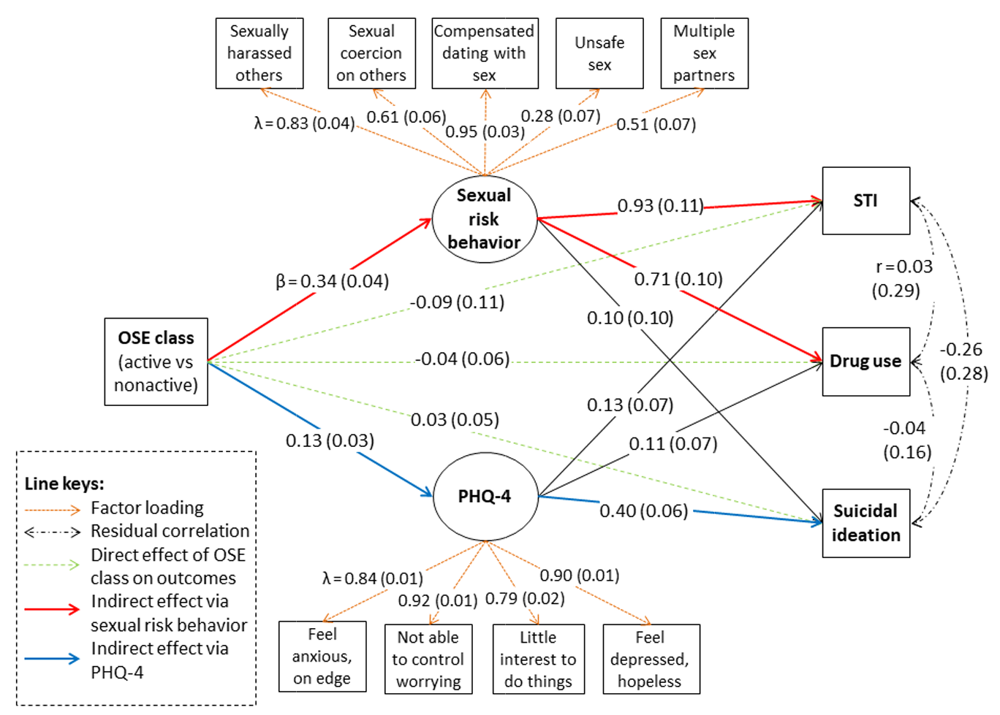

1 引言
- 网络和社媒影响成年初显期群体的社会关系
- 西方国家的流行文化已经使年轻人开始接受无承诺的性行为
- 疫情增加了线上性经验（online sexual experience，OSE）
- OSE和性风险行为关联在美国和中国大陆样本中得到验证
- 当前缺乏对OSE特征多样性的研究
- WOS文献检索结果佐证
- 缺乏对中国香港样本研究
- OSE也和健康关联，但没有研究探究其特征和心理健康的关联
- 本研究目的
- 调查香港年轻人的OSE特征
- 验证衍生的OSE类别，并分析其与外部变量的关联
- 通过性风险行为和心理健康来研究OSE类别与行为健康结果的直接和间接关系
2 方法
2.1 研究设计和程序
- 2021 Youth Sexuality Study (YSS) of the Hong Kong Family Planning Association
- 电话访谈
- 充分经验的机构负责
- 下午6:30到10:30打电话
- 22000个电话，1909个无效，17253个无目标对象，2838个有资格参加
- 最终1205完成访谈，42.5%
- 600个进行了第三方质检，563个通过
2.2 测量
- OSE：11题（0,1），分三类：不涉及性唤起、个体性唤起，和他人互动的性唤起
- 人口特征：性别、年龄、教育程度、学生vs工作、出生地点（香港vs其他）
- 家庭特征：婚姻状况（已婚vs单身）、家庭满意度（你对家庭生活满意吗？Are you happy with your family life?，1-5）
- 每周花在社交媒体上的时间
- 心理健康：PHQ-4（0-3）、感知COVID-19负面影响（1-5）
- 性相关：性取向（异性vs同性）、性欲（1-5）、性知识、5种性风险行为经验（性骚扰，性胁迫，性援助交际，没有避孕措施的不安全性行为，多个性伴侣,0,1）
- 3种行为健康结果：性传播感染（STIs）、吸毒（drug use）、自杀意念
2.3 数据分析
- 根据人口普查信息，对性别、年龄组、出生地进行权重校正
- 缺失信息用FIML补全
- OSE使用LCA分类
- BIC、Lo-Mendell-Rubin (LMR) likelihood ratio test、entropy、average latent class probabilities用于评估
- 分性别
- BHC比较分类差异，Sidak correction
- 多项式逻辑回归
- SEM
- 伦理审核通过
3 结果
3.1 样本特征
- 1205人，18–27岁（23.0 ± 2.86）；男613、女592；多数香港出生、已工作、未婚、异性恋
- 性知识平均得分为10.1分（满分 12 分）；平均每天使用社交媒体2.94小时
- 各项性风险行为：3.2%–12.3%，无避孕措施的性行为最常见
- 1.7%报告过性传播感染；3.3%报告过吸毒，6.5%报告过自杀意念
- 线上性体验：最常见的是接触色情内容（66.5%）、浏览性相关内容（58.7%）和在社交媒体上与他人讨论性（51.1%）
- 男性在全部11项线上性体验上的报告比例均高于女性（ps < .001）
3.2 LCA
- 3类最佳
- 节制型（abstinent，33.1%）：11个题项的报告概率都较低，为0.3%–11.5%
- 常见型（normative，56.0%）：主要报告接触色情内容、浏览性相关内容、在社交媒体上讨论性，以及主动搜索色情内容，其余7项的报告概率均低于40%
- 活跃型（active，10.9%）：人数最少，但11个题项的报告概率均为三类中最高，为49.5%–100%
- 男女都是这三类，男性的活跃型比例较高（17.0% vs. 4.7%），女性的节制型比例较高（44.4% vs. 21.4%）
- 节制型的性欲和心理困扰（PHQ-4）得分最低，自杀意念的比例最低
- 常见型的性知识得分最高，无避孕措施性行为的比例最低
- 活跃型的性欲和心理困扰得分最高，非异性恋者比例也最高，更常报告除没有避孕措施的不安全性行为外的四项性风险行为经验，性传播感染和吸毒的比例也更高
3.3 SEM

- 活跃型和非活跃型（节制型和常见型合并）比较
- 经由性风险行为，活跃型与更高的性传播感染报告率和精神活性药物使用报告率间接相关
- 经由心理困扰，活跃型与更高的自杀意念报告率间接相关
4 讨论
- 线上性体验有不同的参与模式
- 常见型可能反映日常的性探索
- 活跃型的健康关联涉及两条路径
- 研究仍有测量和代表性上的限制
- 建议扩展性教育的内
参考文献
Fong, T. C. T., Cheung, D. Y. T., Choi, E. P. H., Fong, D. Y. T., Ho, R. T. H., Ip, P., Kung, M. C., Lam, M. W. C., Lee, A. M., Wong, W. C. W., Lam, T. H., & Yip, P. S. F. (2024). Latent heterogeneity of online sexual experiences and associations with sexual risk behaviors and behavioral health outcomes in chinese young adults: Cross-sectional study. Jmir Public Health and Surveillance, 10, e50020. https://doi.org/10.2196/50020